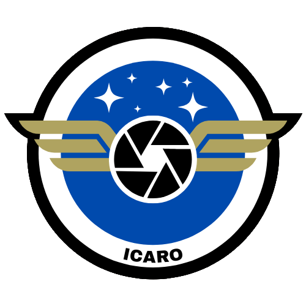
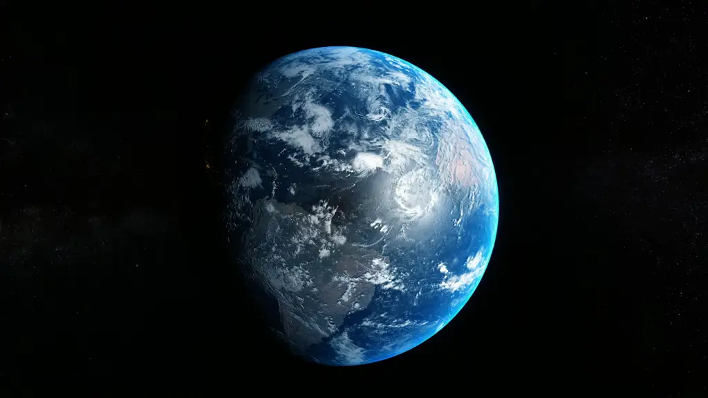

PROYECTO ICARO


GLOBO ESTRATOSFERICO
COMUNICACION LoRa
STREAMING DE VIDEO
RADIO
Ícaro's Sensor Box
Desarrollo de uno de los equipos que van a ser lanzados en el proyecto Ícaro, un proyecto organizado y retransmitido por @Araba_ST y @Labgluon en Twitch.
El proyecto Ícaro busca lanzar un globo estratosférico (hasta unos 20-30km de altura), subiendo varios equipos, entre ellos: Uno de radioafionados con APRS y Repetidor U/V, y nuestro equipo de sensores.
Nuestro objetivo es aprender a desarrollar equipos más complejos, a lo que sumamos la dificultad de ser el primer proyecto realizado en comunidad con la gente de www.twitch.tv/labgluon. Añadiendo la incertidumbre de gestionar equipos remotos y que no han trabajado nunca juntos..
POLE